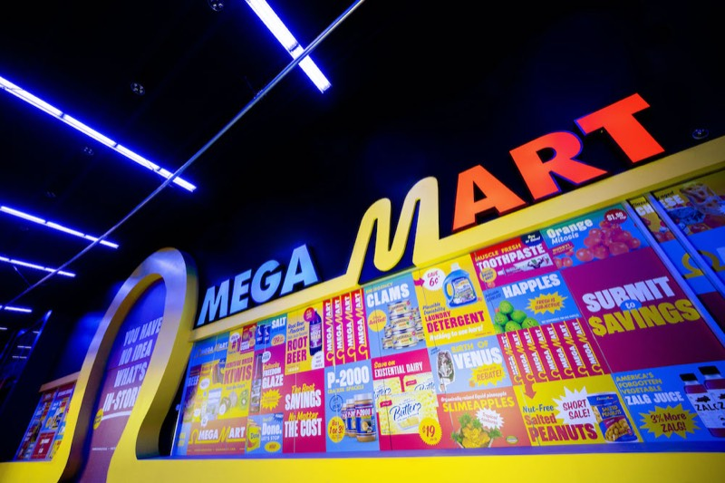
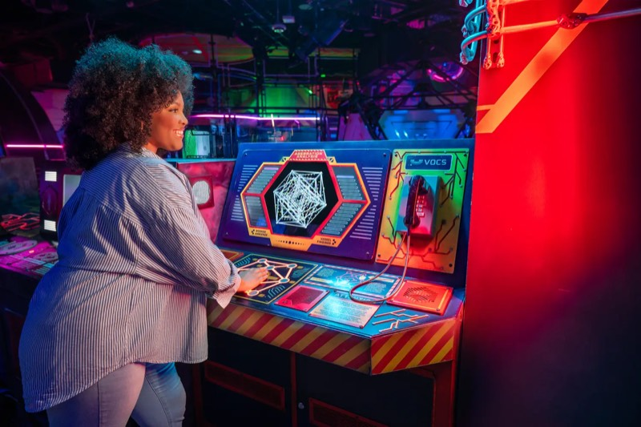
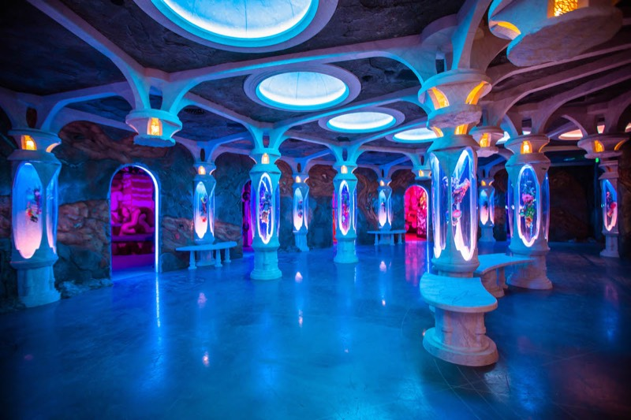
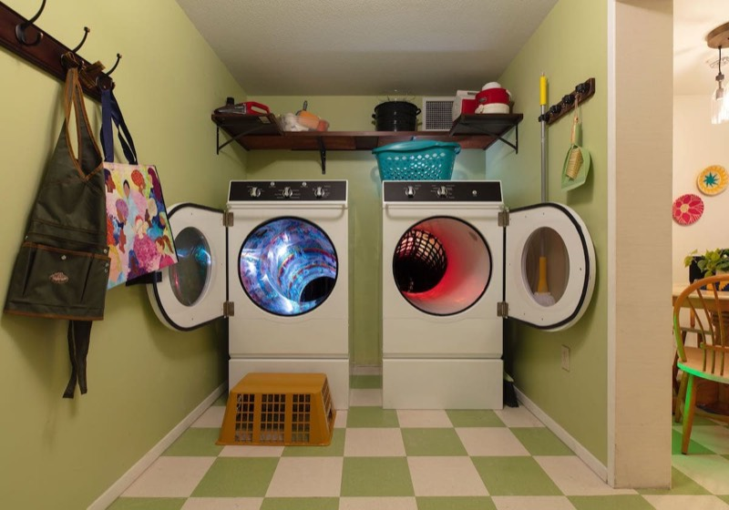

Software developer, 2018 to 2022
I worked at Meow Wolf from 2018 to 2022 on exhibit software, AR, and the ticketing and web platforms. A lot of it was distributed systems work: devices spread across each exhibit, plus web apps, reading and writing the same guest data.

I was the lead game developer on Omega Access at Omega Mart in Las Vegas, and a game developer on QPass at Convergence Station in Denver. Both are RFID card systems. Guests tap a card at ports throughout the exhibit to unlock content and move through a branching story. Progress is stored per card, so it carries across visits and can be viewed on a phone through a web app. Some interactions trigger lighting, audio, and video changes across the whole space.
At Omega Mart I built the message broker stack and the clients that connect devices across the exhibit to it. I was also the lead game developer on Dramcorp, the Factory, the Foreman's Office, and the HR Department.


I led the rebuild of tickets.meowwolf.com from planning through launch. It added $2M in annual revenue, improved purchase conversion by 5%, and cut checkout time by more than 40 seconds. I also worked on meowwolf.com and built a CI/CD pipeline with staging and production QA for ticketing and the web apps.
I built a browser-based 3D exhibit-planning tool in Three.js that let stakeholders review experience designs together in real time.
Stack: Node, Express, React, Socket.io, Three.js, Docker, Google Kubernetes Engine, Jenkins.
I led AR for Omega Mart, Convergence Station, and The Real Unreal. I led artists and engineers on a multiplayer HoloLens 2 experience where guests could gain and share powers. I was also the lead engineer on The Garage, a live Magic Leap performance made of five connected XR experiences.

Photos: Meow Wolf.